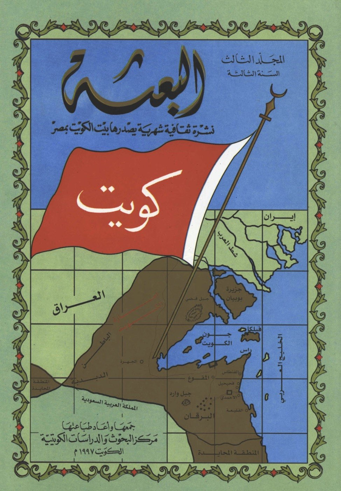
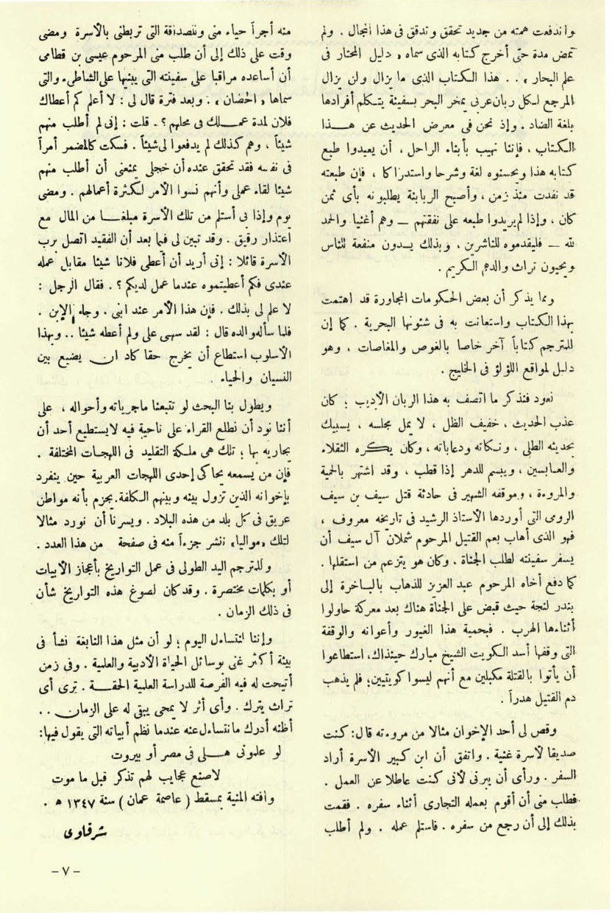
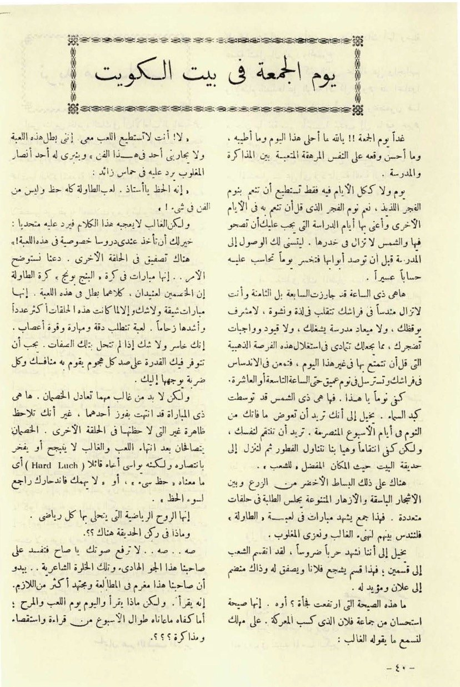
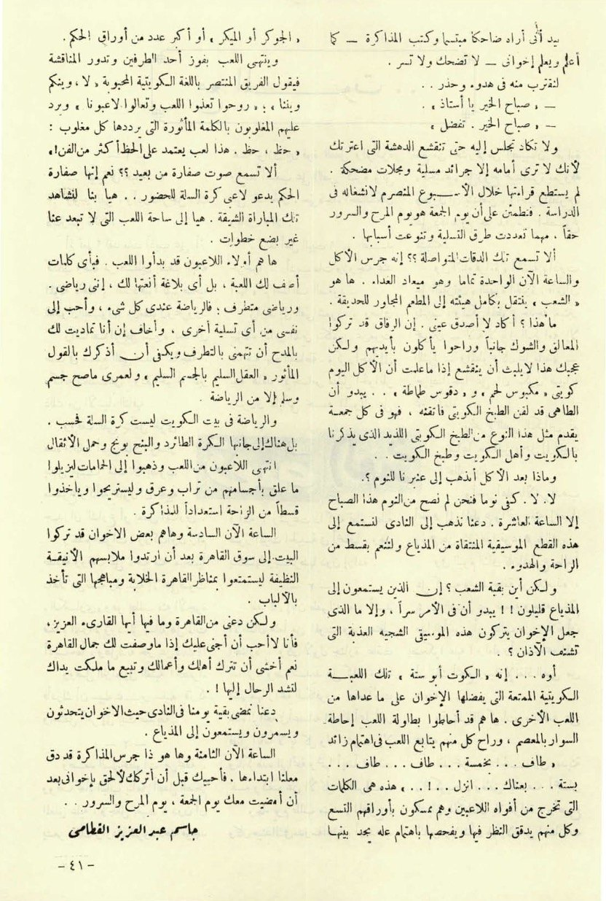
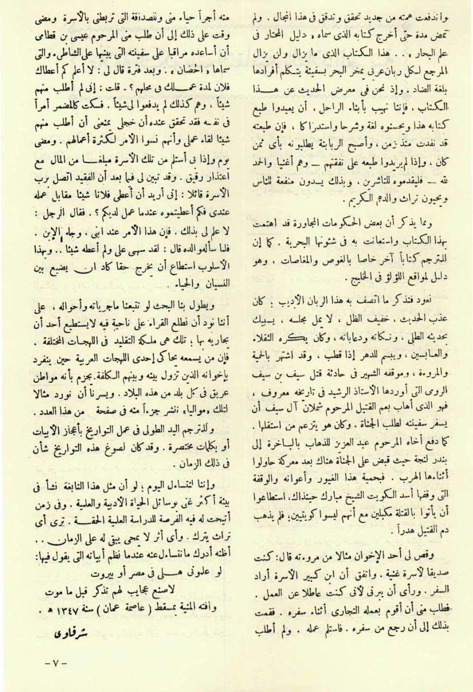
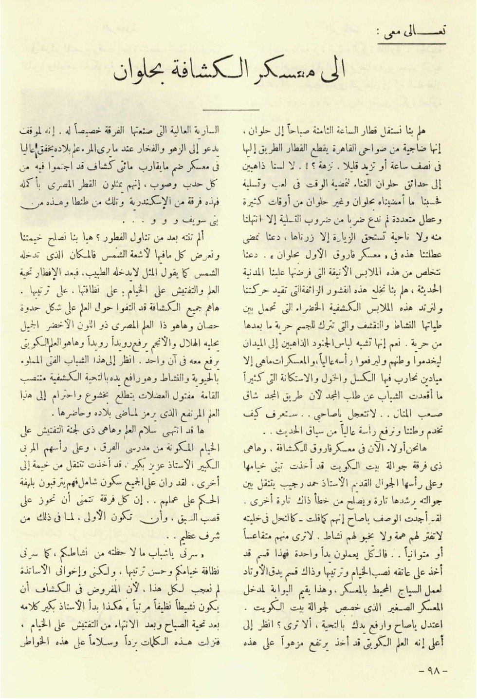
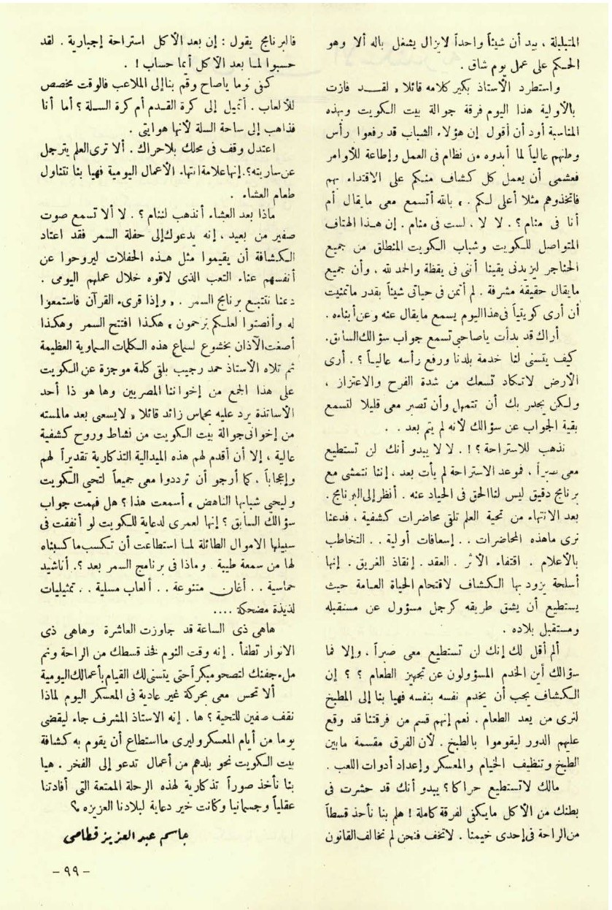
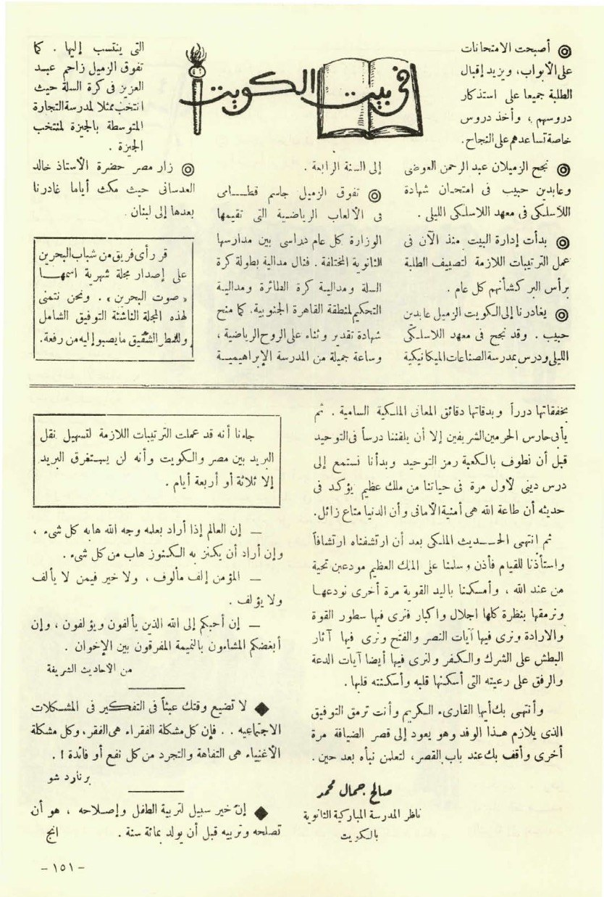
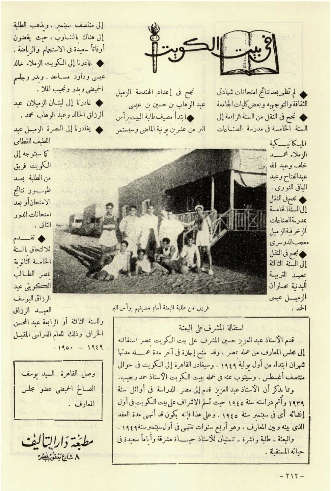
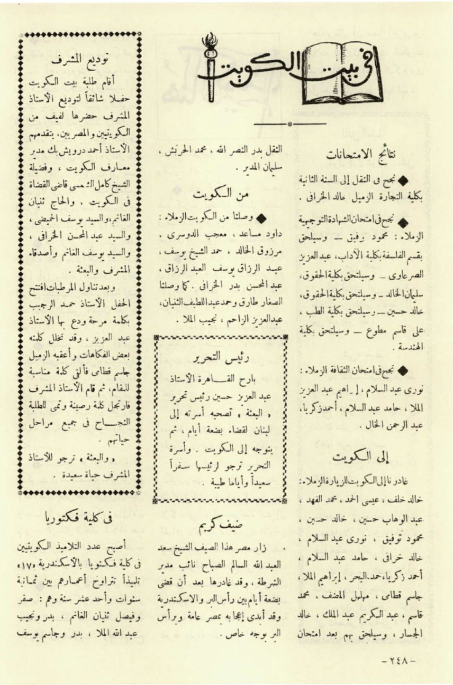

1949, Al-Ba’tha volume 3 (reprinted 1997) · Pages from Al-Ba’tha, the monthly of Bait Al-Kuwait in Cairo, volume 3, collected and reprinted by the Center for Research and Studies on Kuwait, 1997
Al-Ba’tha, 1949: Eissa’s dialect verses, and Jassim, Yacoub and Abdullatif as students in Egypt
What it is
Pages 6 and 7, «A'lam Al-Kuwait 6», give the biography of Eissa bin Abdulwahab Al-Qatami (1287 to 1347 AH), drawn from his son Yousef the translator, from friends of the family, and from Abdulmunim Eissa’s notes on his dialects. Born in Kuwait, his father died when he was small; his mother sent him to the kuttab, and at nine he first went to sea with his uncle Thunayan Al-Ghanim, father of Haj Thunayan Al-Ghanim, and then with his uncle Haj Ibrahim. He learned the sea from them for fourteen years, then sailed as an independent navigator on the ship of Ahmed Al-Naser, and travelled the coasts of Africa, India and Yemen. His colleagues asked him to write a guide, and he wrote Dalil Al-Muhtar fi Ilm Al-Bihar, «which is still and will remain the reference of every Arab captain». The article tells of his good humour and generosity, and of his stand when Saif bin Saif Al-Roumi was killed: he urged Shamlan Al-Saif, the victim’s uncle, to send his ship after the killers and led those aboard, and sent his brother Abdulaziz by steamer to Bandar Lengeh, where the killers were caught. It ends with his verse «Law alawni hali fi Masr aw Beirut» and records that he died in Muscat in 1347 AH. Page 46 prints a poem by the late Eissa bin Qatami in five dialects: Egyptian, Hijazi, Kuwaiti, Bahraini and Hasawi. Page 74 praises it and says «our colleague Jassim Qatami, the nephew of the subject», is known for imitating Egyptian dialects. Page 134 prints more of Eissa’s dialect verses, sent by Abdulmunim Eissa Al-Salem. Page 67: Jassim Qatami acts in the Bait Al-Kuwait theatre troupe at the Prophet’s birthday celebration. Page 212: Abdullatif Al-Qatami leaves for Basra for the summer. Page 248: Jassim Qatami travels to Kuwait for the summer and gives a speech at the farewell for the supervisor. Pages 288 and 289, the Kuwaiti students in Egypt for 1949 to 1950: Abdullatif Qatami at Al-Saidiya Secondary, fifth year, science; Jassim Abdulaziz Qatami at the Police College, first year; Yacoub Qatami at Fouad I University, Faculty of Commerce. Page 41 ends Jassim Abdulaziz Al-Qatami’s «Friday at Kuwait House». Page 96 announces the Kuwait House rover troop of twelve students, among them Jassim Qatami, and its first camp at Helwan from 20 to 24 February; page 99 ends Jassim Abdulaziz Qatami’s own account of that camp. Page 151 reports that «our colleague Jassim Qatami» excelled in the ministry’s annual games between the secondary schools, winning the basketball, volleyball and refereeing medals for South Cairo, with a certificate of merit for his sportsmanship and a watch from Al-Ibrahimiya School. Page 163 is his essay «Khawatir Riyadiya».
Why it matters
A record from the time itself of Eissa’s gift for dialects, and of three young men of the family studying in Egypt.
Page copies


















Notes
The 1 January 1949 profile of Eissa (pages 6 and 7) is a separate entry under his news. Al-Ba’tha gives his death as 1347 AH and names his son Yousef among its sources; Al-Zirikli gives 1348 AH. Both fall in 1929.
Others named
Sources
Al-Ba’tha, volume 3 (1949), reprinted by the Center for Research and Studies on Kuwait, 1997
How this text was made: Photographed from the reprinted volume.
Open in the interactive site